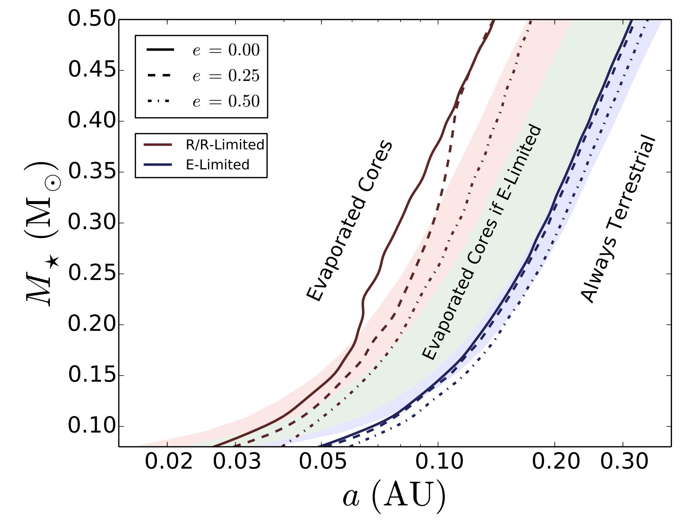

Figure 1
Regions of parameter space that could be populated by Earth-mass HECs.
Terrestrial planets detected today occupying the space to the left
of each contour line could be the evaporated cores of gaseous
planets. Planets detected to the right of the contour lines have
always been terrestrial or gaseous. Dark red lines correspond to
the conservative mass loss scenario, in which mass loss is
radiation/recombination-limited at high extreme ultraviolet (XUV)
flux and energy-limited at low XUV
flux. Dark blue lines correspond to mass loss via the energy-limited mechanism
only. Different line styles correspond
to different eccentricities today. Terrestrial planets detected
at higher eccentricity could be evaporated cores
at slightly larger orbital separations than planets detected
on circular orbits. Note that in the energy-limited regime,
all
Earth-mass terrestrial planets in the HZ of low-mass M dwarfs could
be habitable evaporated cores. At higher stellar mass, HECs are
restricted to
planets in the inner HZ. In the radiation/recombinationlimited regime, the
accessible region of parameter space is smaller, but around the lowest mass M
dwarfs HECs are still possible in the conservative HZ.